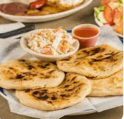
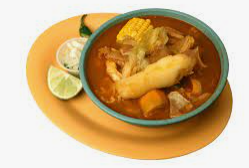
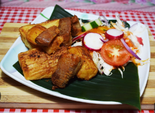
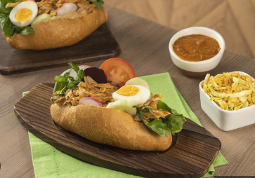

El Salvador, conocido como "La Tierra de los Volcanes", ofrece una amplia variedad de deliciosos platos típicos que reflejan la rica cultura e historia del país. La gastronomía salvadoreña se caracteriza por su sabor auténtico y el uso de ingredientes frescos y tradicionales.
Pupusas

Ingredientes:
2 tazas de harina de maíz
1 taza de agua tibia
Relleno a elección: queso, frijoles refritos, chicharrón, etc.
Instrucciones:
En un tazón, mezcla la harina de maíz y el agua hasta obtener una masa suave.
Toma una porción de masa y forma una bola. Haz un hueco en el centro y agrega el relleno.
Envuelve el relleno con la masa y forma una tortilla plana.
Cocina las pupusas en una sartén caliente hasta que estén doradas por ambos lados.
Sirve las pupusas calientes acompañadas de curtido y salsa de tomate.
Sopa de Pata

Ingredientes:
2 patas de res
2 litros de agua
1 cebolla picada
2 dientes de ajo picados
2 zanahorias cortadas en rodajas
2 papas cortadas en cubos
2 elotes cortados en rodajas
Sal y pimienta al gusto
Instrucciones:
En una olla grande, hierve las patas de res en agua durante aproximadamente 3 horas hasta que estén tiernas.
Retira las patas de res y desmenúzalas.
Regresa la carne desmenuzada a la olla junto con la cebolla, el ajo, las zanahorias, las papas y los elotes.
Sazona con sal y pimienta al gusto y cocina a fuego lento hasta que las verduras estén tiernas.
Sirve la sopa caliente y disfruta de su delicioso sabor.
Yuca Frita con Chicharrón

Ingredientes:
1 kg de yuca
500 g de chicharrón
Aceite vegetal para freír
Sal al gusto
Instrucciones:
Pela y lava la yuca, luego córtala en trozos alargados.
Hierve la yuca en agua con sal hasta que esté suave.
En una sartén grande, calienta el aceite vegetal y fríe el chicharrón hasta que esté crujiente.
Retira el chicharrón de la sartén y colócalo en un plato con papel absorbente para eliminar el exceso de grasa.
En la misma sartén, fríe los trozos de yuca hasta que estén dorados y crujientes.
Sirve la yuca frita con chicharrón y disfruta de esta deliciosa combinación.
Panes con Pavo

Ingredientes:
6 panes franceses
1 kg de pavo desmenuzado
1 taza de salsa de tomate
1 taza de repollo rallado
1 taza de salsa inglesa
Sal y pimienta al gusto
Instrucciones:
Abre los panes franceses y coloca una porción generosa de pavo desmenuzado en cada uno.
Vierte salsa de tomate sobre el pavo y sazona con sal y pimienta al gusto.
Agrega repollo rallado y rocía con salsa inglesa.
Calienta los panes en un horno precalentado a 180 °C durante unos minutos.
Sirve los panes con pavo calientes y disfruta de este clásico salvadoreño.